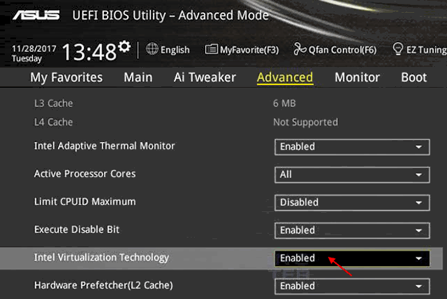
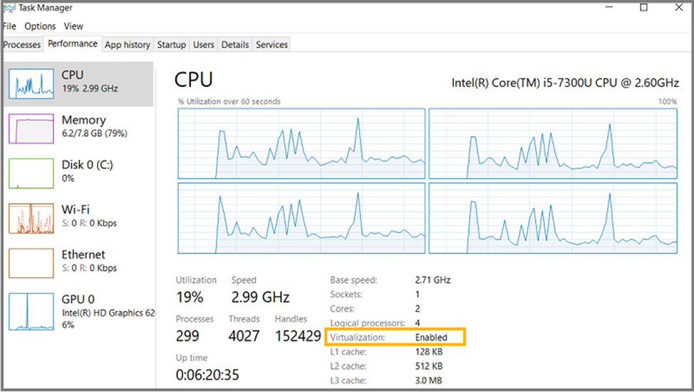

La virtualización simula normalmente sistemas hardware por software, esto es debido a que los equipos hardware son cada vez más potentes y permiten la ejecución de diferentes sistemas virtualizados (sistemas operativos, routers, switch…). Esta virtualización ofrece una serie de ventajas que solucionan los problemas de un único servidor visto en el punto anterior:
- Facilidad de replicación.
- Copias de seguridad.
- Configuración.
- Tolerancia ante fallos.
- Ahorro de costes.
Por supuesto no todo son ventajas, existiendo las siguientes desventajas:
- Menor rendimiento.
- Complejidad para optimización.
En un sistema de virtualización se pueden distinguir 2 elementos principales:
- Anfitrión: Sistema operativo que se encuentra directamente sobre el hardware.
- Huésped: Sistema operativo que se encuentra sobre el anfitrión o sobre el software de virtaulización.
Para dar soporte a la virtualización y que funcione de forma adecuada no es suficiente con un procesador potente ya que el sistema operativo anfitrión no permite el acceso a ciertas funcionalidades y elementos del procesador por seguridad. Algunos sistemas operativos poseen diferentes anillos con permisos en los que se localiza el software en función de su importancia, por ejemplo, no tiene sentido que un procesador de texto pueda acceder al área de memoria en que se almacena la tabla de procesos.
En el anillo 0 solo tiene acceso el núcleo y da opción a usar la funciones más importantes del procesador, no pudiendo el resto de programas acceder al mismo, implicando menos rendimiento. La solución es crear el anillo -1 para el núcleo anfitrión y los núcleos virtualizados en el anillo 0.
Las principales tecnologías desarrolladas son:
- VT Intel (VT).
- AMD-V.
Es necesario activar las tecnologías en la BIOS/UEFI del equipo:

Una vez activada se puede observar en el Administrador de tareas del sistema operaivo que aparece la característica Virtualization como “Enabled” (habilitado).
Existen dos tipos de máquinas virtuales:
De Sistema / Hardware
Máquina física dividida entre varias virtuales. Capa de software encargado de la gestión → HYPERVISOR.
Existen dos tipos de hipervisores:
- Tipo 1: El hipervisor corre directamente sobre el hardware, no necesita sistema operativo anfitrión.
- Tipo 2: El hipervisor corre sobre un sistema operativo anfitrión y sobre estos dos los sistemas operativos huéspedes.
De Proceso
La máquina virtual se ejecuta como un proceso normal. Objetivo entorno de ejecución independiente de la plataforma donde se ejecuta. Ejemplo JVM o máquina virtual de JAVA.
Existen diferentes técnicas de virtualización como son:
- Completa del hardware o nativa. Múltiples máquinas virtuales distintas funcionando al mismo tiempo. Los sistemas operativos deben tener la misma arquitectura (x86, ARM, …).
- Emulación de hardware o no nativa. Se simula el hardware compatible con el sistema operativo o software a ejecutar. Por ejemplo el emulador MAME o más recientemente el motor .NET.
- Nivel del sistema operativo. Dividir la máquina en compartimentos independientes. Actualmente en desuso.